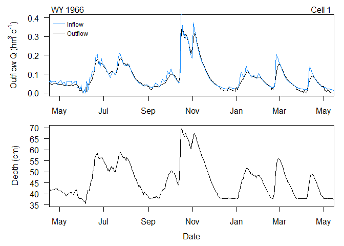
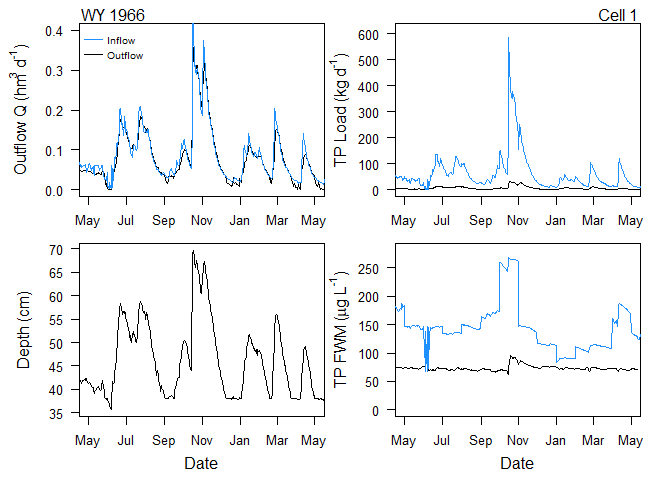
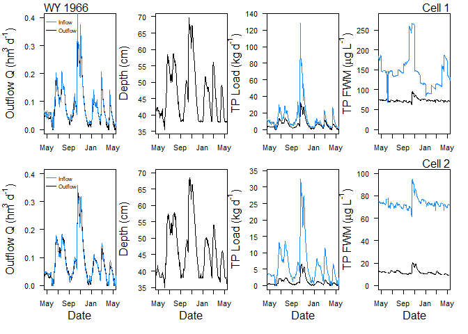

DMSTAr is a deterministic hydrology and phosphorous mass-balance engine replicating the VBA code semantics of the original Dynamic Model for Stormwater Treatment Areas (DMSTA). For complete details regarding DMSTA background and development see DMSTA webpage and relevant publications below.
Kadlec RH, Wallace SD (2009) Treatment wetlands, 2nd edn. CRC Press, Boca Raton, FL
Walker WW, Kadlec RH (2011) Modeling Phosphorus Dynamics in Everglades Wetlands and Stormwater Treatment Areas. Critical Reviews in Environmental Science and Technology 41:430–446. doi: 10.1080/10643389.2010.531225
citation('DMSTAr')
#>
#> To cite package 'DMSTAr' in publications use:
#>
#> Paul Julian (2026). DMSTAr: Dynamic Model for Stormwater Treatment
#> Areas in R. R package version 0.1.0.
#> https://github.com/SwampThingPaul/DMSTAr
#>
#> A BibTeX entry for LaTeX users is
#>
#> @Manual{,
#> title = {DMSTAr: Dynamic Model for Stormwater Treatment Areas in R},
#> author = {Paul Julian},
#> year = {2026},
#> note = {R package version 0.1.0},
#> url = {https://github.com/SwampThingPaul/DMSTAr},
#> }Development version can be installed from this repo using:
install.packages("devtools");# if you do not have it installed on your PC
devtools::install_github("SwampThingPaul/DMSTAr")Develop Ordinary Differential Equation (ODE) versions DMSTA functions
Develop flume and alum based models
Below are a couple of examples of how use the functions in this R-package to do simple simulations. The three main modeling functions in DMSTAr is dmsta_flow_series(...) (single cell hydrology only), dmsta_flowP_series(...) (single cell hydrology and P) and dmsta_flowP_case(...) (networked hydrology and P). Each function requires input parameters and input (i.e. forcing) data to simulate outflow conditions.
For input data purposes we will use the internal data series in this package:
To see what this is use ?DMSTAr::series
For purposes of this demonstration we will use only the first year and half of the example input data frame.
# for example, limit input file
series <- series[1:540,];
# Data formatting
series$Qi <- cfs_to_hm3d(series$Flow) # cfs to hm3/d
series$Rain <- in_to_m(series$Rainfall) # inches to meters per day
series$Et <- in_to_m(series$ET)
series$Zcontrol <- cm_to_m(0) # meters; setting to zero to see what happens
# If you have release series; otherwise set to 0
series$Qr0 <- 0 # constrained outflow (forced Q) if used
series$Qr1 <- 0 # release 1
series$Qr2 <- 0 # release 2
series$Ci <- series$Conc
# input parameters
params <- list(
A_cell = 2.19, # cell area; km2
Zmin = 2, # minimum depth; cm
Vmin = 0, # minimum volume; hm3
Q_a = 1.0, # discharge coef
Q_b = 4.0, # discharge exponent
Zweir = 0, # depth offset for outflow computation; cm
Q_zmin = 38, # minimum depth of discharge; cm
Qomax = 0.0, # maximum discharge hm3/day
Qimax = 0, # maximum inflow (hm3/day)
Width = 1.55, # cell widthl km
Bypass_elev = 0, # mean depth at which bypass begins, cm
Seepout_Rate = 0.00789, # outflow seepage rate per unit head; cm/d/cm
Seepout_Elev = 0.0, # elevation controlling outflow seepage rate; cm
Seepin_Rate = 0.0, # seepage inflow rate; ; cm/d/cm
Seepin_Elev = 0.0, # elevation controlling inflow seepage rate; cm
ShutdownET = TRUE,
force_Q_out = FALSE,
wrap_interp = TRUE,
Zinit = 40, # initial water column depth; cm
Qin_Frac = 0.22, # fraction of basin flows going into this cell
Zrelease = 0, # minimum depth for releases; cm
RecycleQ = 0
)
# initial volume (based on input values)
V_init <- (cm_to_m(params$Zinit) * params$A_cell)
out_hydro <- dmsta_flow_series(V_init, series, params, Nsteps = 4)
hydro_rslt <- out_hydro$results
# convert water depth from meter to centimeters
hydro_rslt$Z_end_cm <-m_to_cm(hydro_rslt$Z_end)
str(out_hydro)Each function provides a list of data.frames including results (out$results), daily water budget (out$budgets$water) and metadata (out$meta).

Simulated outflow discharge (top) and water level (bottom).
## Phosphorous Modeling parameters
pparams <- list(
DutyCycle = 0.95,
Cmax = 2000,
C1000 = 22,
Cstar = 3,
Ks_per_yr = 16.8,
Z1 = 40,
Z2 = 100,
Z3 = 200,
Chalf = 300,
K2Coef1 = 0,
Ytrans = 0,
Ysigma = 0,
Czero = 0,
C_rain = 10,
DryDepo = 20,
SeasonalFactor = 0,
C1000_2 = NULL,
ks_2 = 0,
zh_2 = 0,
k_depth_penalty = 1,
seepage_c = 20,
seepin_conc = 0,
C_init_ppb = 30,
Y_init_mgm2 = 3387.67297548954,
n_tanks = 3,
Nsteps = 4
)
# Add the hydrology parameters (above) to the P parameters
params <- modifyList(params,pparams)
## choose model structure
ttankS <- params$n_tanks # tanks in series (can be fractional)
Nsteps <- params$Nsteps # RK substeps per day
## build tank geometry once
tanks <- dmsta_build_tanks(params$A_cell, ttankS)
## build kinetics once: 3 modules STA/PSTA/RES
ppar <- build_P_kin_slots(
mods = c("STA", "PSTA", "RES"),
pparams = params,
Dpy = 365.25,
DutyCycle = params$DutyCycle)
# A function to validation/check input parameters
validate_P_paramsK(ppar)
## constants
constants <- list(
Cmax = params$Cmax,
C_rain = params$C_rain,
DryDepo = params$DryDepo / 365.25, # convert to mg/m2-day
seepin_conc = params$seepin_conc,
seepout_conc_max = params$seepage_c,
fseep_recycle = 0,
fseep_out = 0
)
## initial conditions
Z_init_m <- cm_to_m(params$Zinit)
V_init <- params$A_cell * Z_init_m
P_state0 <- dmsta_p_init_state(
tanks,
Z_init_m = Z_init_m,
C_init_ppb = params$C_init_ppb,
Y_init_mgm2 = params$Y_init_mgm2
)
hydroP_out <- dmsta_flowP_series(
series = series,
params = params,
ttankS = ttankS,
Nsteps = Nsteps,
tanks = tanks,
ppar = ppar,
constants = constants,
V_init = V_init,
init_P_state = P_state0,
return_steps = FALSE
)
hydroP_rslt <- hydroP_out$results
hydroP_rslt$Z_end_cm <-m_to_cm(hydroP_rslt$Z_end)
str(hydroP_out)Similarly to the hydrology outputs out contains a list of data frames, the only difference in this function also include a P mass balance budget, to view see out$budgets$mass.

Simulated outflow discharge (top left), water level (bottom left), TP load (top right) and TP concentration (bottom right).
dmsta_flowP_case allows for the simulation of cells in series where for example, Cell 1 flows into Cell 2. It is part wrapper function but also links more complex interactions of seepage and recycled discharge/load between cells.
# input parameters
# 1) Base hydrology params (shared structure)
hydro_base <- list(
A_cell = 2.19, # km2
# depths in cm
Zmin = 2, # cm
Zinit = 40, # cm
Zweir = 0, # cm
Q_zmin = 38, # cm
Zrelease = 0, # cm
Bypass_elev = 0,
# hydraulics
Q_a = 1.0,
Q_b = 4.0,
Width = 1.55, # km
Qomax = 0.0, # hm3/day; 0 disables max cap in this implementation
Qimax = 0.0, # hm3/day; 0 disables inflow cap
# seepage (rates in m/day per m head; elevations in cm)
Seepout_Rate = 0.0,
Seepout_Elev = 0.0, # cm
Seepin_Rate = 0.0,
Seepin_Elev = 0.0, # cm
ShutdownET = TRUE,
force_Q_out = FALSE,
DutyCycle = 0.95,
Cmax = 2000
)
# 2) Base P params (shared structure)
P_base <- list(
# STA module
C1000 = 22,
Cstar = 3,
Ks_per_yr = 16.8,
Z1 = 40,
Z2 = 100,
Z3 = 200,
Chalf = 300,
K2Coef1 = 0,
SeasonalFactor = 0, # keep 0 for base parity
# PSTA (NEWS transition)
Ytrans = 0,
Ysigma = 0,
Czero = 0,
C1000_2 = NULL,
ks_2 = 0,
zh_2 = 0,
# RES depth penalty
k_depth_penalty = 1,
# atmos + seepage water quality
C_rain = 10, # ppb (ug/L)
DryDepo = 20, # mg/m2-yr
seepage_c = 20, # ppb cap for seep outflow
seepin_conc = 0, # ppb
# initial P state
C_init_ppb = 30,
Y_init_mgm2 = 1000
)
# 3) Cell-specific params
params_cell1 <- modifyList(hydro_base, modifyList(P_base, list(
Qin_Frac = 0.22,
Seepout_Rate = 0.00789,
Ks_per_yr = 16.8,
Y_init_mgm2 = 3387.67297548954
)))
params_cell2 <- modifyList(hydro_base, modifyList(P_base, list(
Qin_Frac = 0,
Seepout_Rate = 0.00155,
Ks_per_yr = 52.5,
Y_init_mgm2 = 768.480041186681
)))
# 4) Build cells
cells <- list(
dmsta_make_cell(
label = "CELL1",
params = params_cell1,
ttankS = 3.0,
DownCell = 2L,
Qin_Frac = params_cell1$Qin_Frac,
RecycleIndex = 1L # self; can omit if your validator maps NA/0 -> self
),
dmsta_make_cell(
label = "CELL2",
params = params_cell2,
ttankS = 3.0,
DownCell = 0L,
Qin_Frac = params_cell2$Qin_Frac,
RecycleIndex = 2L # self
)
)
cells <- dmsta_validate_cells(cells)
# Run case
hydroP_net_rslt <- dmsta_flowP_case(
series = series,
cells = cells,
Nsteps = 4L,
max_iter = 1L,
return_cell_series = TRUE,
keep_Q17 = TRUE,
keep_extra = FALSE
)
hydroP_case_rslt <- hydroP_net_rslt$results$case
hydroP_cells_rslt <- hydroP_net_rslt$results$cells
Much like the other functions this function stores results, water and mass budgets and meta data. The difference being this function stores the data at the “case” level (inflow to cell 1 and outflow of cell 2) as well as cell specific information.

Simulated outflow discharge, water level, TP load and TP concentration for cell 1 (top) and cell 2 (bottom).